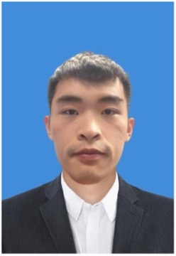

I work on robot learning: manipulation policies that learn from scalable data such as human video and still hold up on a real production line. At GM I bring vision-language-action and world-action models into automotive assembly.
My research also covers reliable vision-language models, LLM agents and physical reasoning. I received my PhD from the University of Southern California.
Building dual-arm manipulation systems for the factory: end-to-end VLA and world-action policies for removing parts from bags, unwrapping boxes and handling wire harnesses, plus a low-cost teleoperation setup for collecting robot data. Also built the perception stack for kitting and leads an in-plant rollout with a vendor. Work has led to two patents.
Physics-informed machine learning and uncertainty quantification for multiscale composite materials. Also earned MS degrees in Computer Science, Statistics and Electrical Engineering.
Full list on Google Scholar.